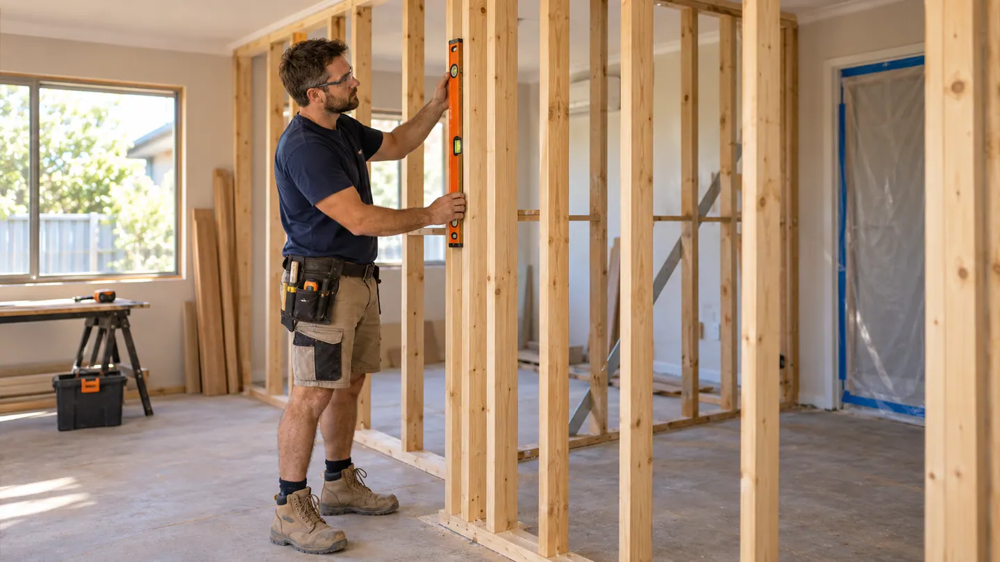

Exterior
Refresh a sound concrete surface
Concrete resurfacing refreshes a sound slab or paved area with a compatible coating or overlay after condition and preparation checks.
Explore serviceLarger property works
Renovation, building and structural services, with on-site assessment and a written quote for the agreed scope.
Regulated work is completed by Ellis's own appropriately licensed team.
Describe your request
Service directory
Open a service below to see the repairs available, common faults and factors that affect the quote. If you are unsure which service to choose, describe the problem directly to Ellis Perth. We inspect the property and confirm the work and written quote.
Exterior
Concrete resurfacing refreshes a sound slab or paved area with a compatible coating or overlay after condition and preparation checks.
Explore serviceBuild & Renovate
Bathroom projects may combine layout changes, fixtures, tiling, waterproofing, cabinetry and coordinated licensed trades.
Explore serviceBuild & Renovate
Bricklaying services cover new walls, localised rebuilding, damaged masonry and matching work around homes and outdoor areas.
Explore serviceBuild & Renovate
Building and renovation services coordinate multi-trade projects, additions and substantial alterations from defined scope through delivery.
Explore serviceBuild & Renovate
Concreting services cover slabs, paths, driveways, footings and other formed concrete work designed for the intended load and site.
Explore serviceBuild & Renovate
Demolition services range from selective strip-out to removal of structures under a planned, controlled and appropriately approved scope.
Explore serviceBuild & Renovate
Home renovation services bring together alterations, repairs and finishes across one or more rooms under a coordinated project scope.
Explore serviceBuild & Renovate
Restumping or reblocking addresses deteriorated supports beneath suitable raised buildings and requires careful structural assessment and sequencing.
Explore serviceCommon enquiries
Seven Perth-area entry points
Ellis Services Group supports property requests across the Perth metropolitan area. Choose a service and share your suburb or postcode to get started.
From request to confirmation
Perth suburb or postcode, property type and where the issue is located.
What you can safely observe, when it started and any access limits.
Your preferred visit window; Ellis confirms the appointment and safe access arrangements.
Service questions
Use the contact page to share your service, suburb or postcode and property details.
Include your suburb or postcode and a clear description of the work you need.
The Ellis Perth office discusses the job directly with you and confirms what our local team can complete.
Start with one request
Share the task and location to start your service request.